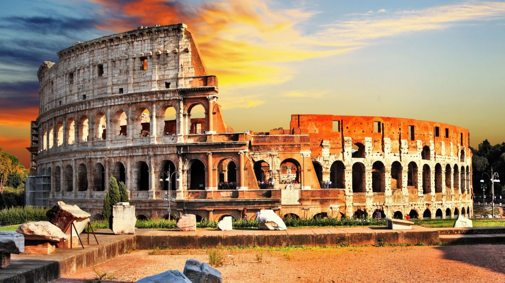
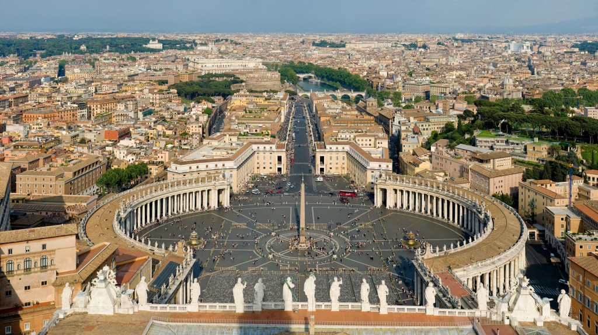
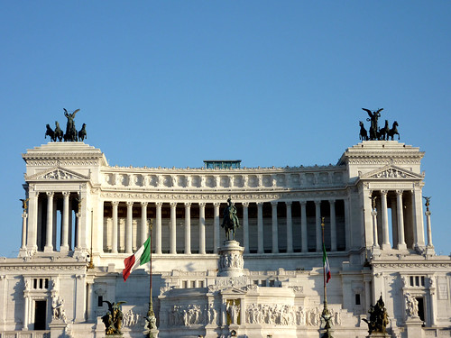

Colisée Romain
La construction de l'Amphithéâtre Flavien, mieux connu comme le Colisée, commence vers l'an 71 après JC sous l'Empereur Vespasien après JC. Le Colisée a été construit dans une vallée, après avoir asséché un petit lac que Néron utilisait pour la Domus Aurea entre les collines du Palatin, Esquilino et Celio. L'Empereur Tito a inauguré le Colisée en 80, mais deux ans plus tard, il arrête les travaux qui incluaient l'étage supérieur.
Le Colisée est devenu le plus grand amphithéâtre romain, en forme d’anneau ovale de 188 mètres de long, 156 mètres de large et 57 mètres de haut. Fait de briques et recouvert de travertin, il a été divisé en cinq niveaux avec une capacité de contenir plus de 50 000 personnes.

Place Saint-Pierre
La place est composée de deux parties : un premier espace trapézoïdal qui précède la basilique, délimité par deux ailes rectilignes convergentes (au sud le bras de Charlemagne, au nord le bras de Constantin) qui délimitent le parvis ; un second espace elliptique compris entre deux hémicycles de la quadruple colonnade. Cette place a une longueur est-ouest de 340 mètres et nord-sud de 240 mètres. Son ellipse centrale a comme dimensions : 198 mètres sur son grand axe orienté nord-sud, 148 mètres sur son petit axe orienté est-ouest.

Monument à Victor-Emmanuel II
L'immense monument d'un blanc immaculé, qui s'inspire du grand autel de Pergame, a été conçu par Giuseppe Sacconi et réalisé entre 1885 et 1911 pour célébrer les 50 ans de l'Unité italienne. Il fut bâti en l'honneur de Victor-Emmanuel II, premier roi de l'Italie unifiée en 1861.
La construction du bâtiment fut contestée car elle causa la destruction d'un quartier médiéval autrefois accroché aux pentes du Capitole.
